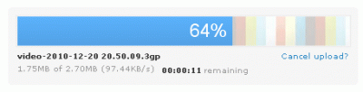
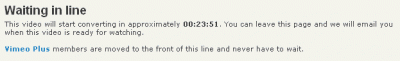
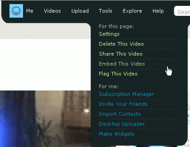
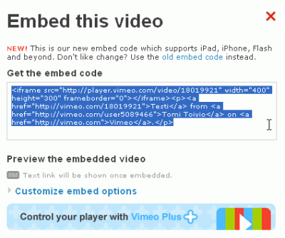
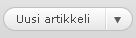
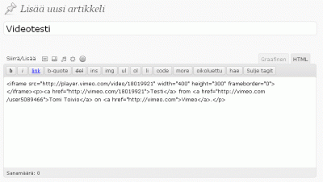
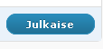
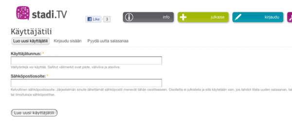
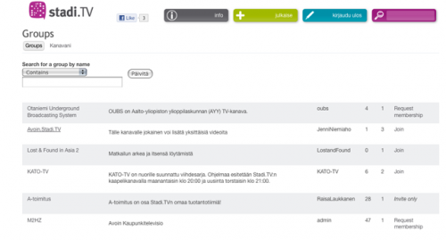
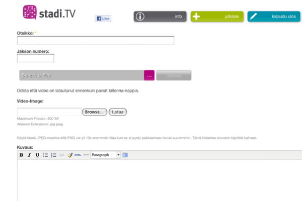

Kun ohjelmasi on valmis, voit ladata sen verkkoon ja julkaista eri kanavilla.
Julkaisukäytäntöjä on kahdentyyppisiä:
1. Lataaminen. Voit ladata ja julkaista ohjelman palvelussa, joka tarjoaa videollesi palvelintilaa (video hosting). Tällaisia palveluja ovat mm. YouTube, Vimeo, Archive.org ja suomalainen Stadi.TV ja ne edellyttävät, että olet rekisteröitynyt palveluun ennen käyttöä. Rekisteröityneillä käyttäjille syntyy näissä palveluissa usein oma "kanava" tai sivu. Monelle tämä jo riittää ohjelmien julkaisuympäristöksi.
2. Upottaminen. Kun videosi on ladattu, voit palvelun tarjoaman upotus (embed)-koodin avulla julkaista videon myös muissa verkkopalveluissa, esimerkiksi WordPress- tai Drupal-sivustolla - tai vaikkapa Facebookissa. Upottamalla julkaiseminen on siksi kätevää, että se ei vie palvelintilaa omalta sivultoltasi. Lisäksi ohjelmasi näkyy nyt verkkopalvelussa, jonka ulkoasun voit määrittää itse.
Kuvaamme ohessa videon lataamisen Vimeo- ja Stadi.TV -palveluihin sekä esimerkkejä upottamisesta eri sisältösivustoille.
Suositeltava tapa julkaista ohjelma on ladata se Vimeoon (www.vimeo.com), josta voit embedata (upottaa) videon eri sivustoille.
Kun olet rekisteröitynyt käyttäjäksi voit kirjautua palveluun. Napsauta etusivun linkkiä Upload a video.
Napsauta seuraavalla sivulla linkkiä Choose a file to upload...
Valitse kiintolevyltäsi video, jonka tahdot ladata, ja napsauta Avaa. Odota videon latautumista.

Napsauta nyt linkkiä Go to video...
Joudut luultavasti odottelemaan jonkin aikaa Vimeon prosessoidessa videotasi.

Kun video on latautunut ja näet sen ruudulla, valitse ylhäällä olevasta Tools-valikosta Embed This Video.

Kopioi kohdassa Get the embed code oleva koodi.

Mene nyt omaan Wordpress-blogiisi. Paina Uusi artikkeli -nappia.

Liitä nyt kopioimasi koodi Wordpressin editoriin.

Paina Julkaise.

Huom! WordPressin tarjoama ilmainen palvelin (wordpress.com) ei salli upotuskoodin lisäämistä. Tämä toiminto onnistuu siis vain silloin, jos sinulla on WordPress asennettuna omalle palvelimelle.
Upottamisen sijaan voit ladata video-ohjelman myös suoraan esim. WordPress-pohjaiselle sivustolle, jos palvelimesi sallii sen. Tällöin WordPressiin pitää ensin ladata ja asentaa esim. Flow Player –mediasoitin-plugin.
Verkkopalveluihin ja julkaisualustoihin luodaan jatkuvasti parempia keskinäisiä rajapintoja, joiden avulla videoiden upottaminen helpottuu. Sinulle ehkä onkin jo tuttua esimerkiksi YouTube-videon jakaminen Facebookissa, joka tapahtuu yksinkertaisesti valitsemalla videon alta "Jaa" ja napauttamalla avautuvassa kentässä Facebookin kuvaketta.
Avoimissa sisällönhallintajärjestelmissä, kuten Drupal ja Joomla, on upottaminen myös helppoa. Drupal 6:lla toteutettuun sivustoon upottaminen tapahtuu siististi valitsemalla sisällön editointiin varatusta kentästä html-näkymä (Edit html source) ja liimaamalla Vimeon tai YouTuben embed-koodi toivomaasi kohtaan.
Yhteensopivuus vaihtelee ohjelmistoversioittain, joten varaudu kokeilemaan ja kenties etsimään lisätietoja sisällönhallintajärjestelmän foorumeilta.
YouTuben, Vimeon ja muiden kansainvälisten videopalvelujen lisäksi tarjolla on myös kotimaisia vaihtoehtoja. Esimerkkimme kuvaa ohjelman lataamisen Stadi.TV-palveluun, joka on helsinkiläisiltä helsinkiläisille suunnattu yhteisöllinen videopalvelu.
Lisätäksesi Video-ohjelmasi palveluun, sinun tulee ensin rekisteröityä Stadi.tv:n käyttäjäksi.

Kun olet luonut uuden käyttäjätilin, voit kirjautua sähköpostiisi lähetetyllä salasanalla.
Jotta voit ladata video-ohjelmasi Stadi.tv:een, sinun on vielä ensin liityttävä johonkin ryhmään. Avoin.Stadi.TV on kaikille avoin ryhmä. Voit liittyä siihen napsauttamalla "Join".

Kun olet liittynyt ryhmään, napsauta kuvaketta "julkaise", minkä jälkeen napsauta "Lisää video". Valitse tiedosto koneeltasi (useimmat formaatit käyvät, sillä palvelu konvertoi tiedostot) ja napsauta "Upload". Videon latautuessa palvelimelle täytä ohjelmatiedot ja lataa videolle tunnuskuva (joka on yleensä still-kuva videosta).

Kun olet täyttänyt kaikki tarvittavat tiedot, ja kun video on latautunut palvelimelle, napsauta "Tallenna".
There has been error in communication with Booktype server. Not sure right now where is the problem.
You should refresh this page.